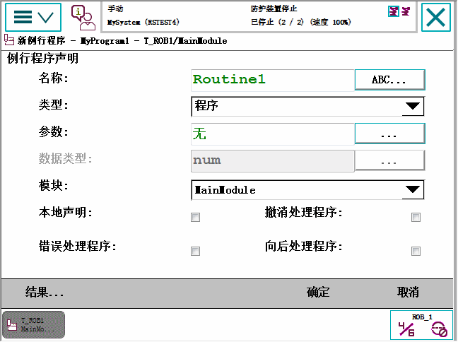
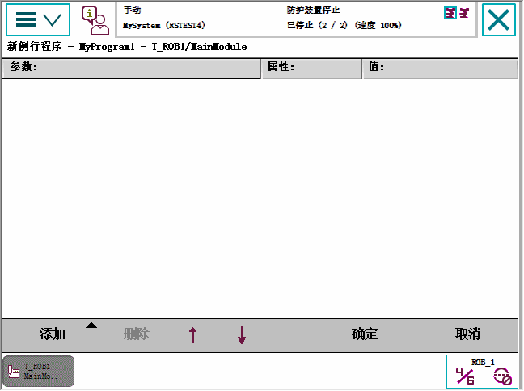
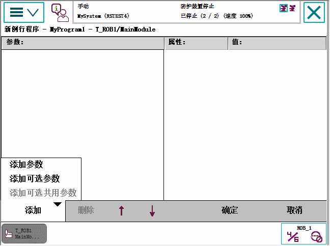
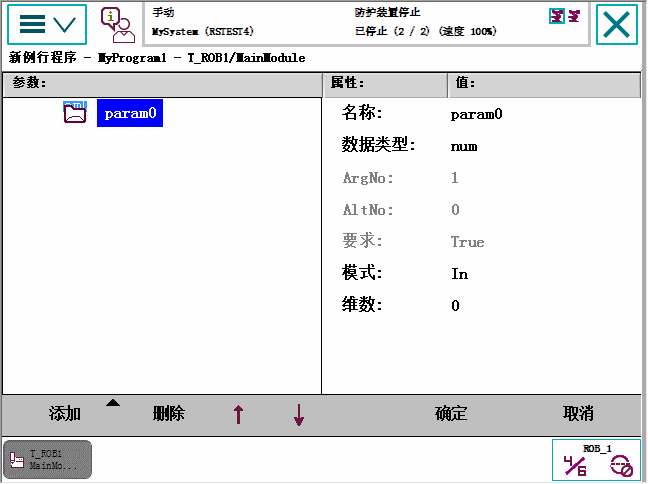

本节详细介绍如何处理程序 例行程序。即：
新建例行程序
创建例行程序副本
更改例行程序声明
删除例行程序
本节详细介绍如何创建新例行程序、设置声明以及将其添加至模块。
操作
1
在 ABB 菜单中，点击 Program Editor（程序编辑器）。
2
点击 Routines（例行程序）。
3
点击 File（文件），然后点击 New Routine（新建例行程序）。
新例行程序将创建并显示默认声明值。

4
点击 ABC... 。 确定 。
5
选择例行程序类型：
过程：用于无返回值的正常例行程序
函数：用于含返回值的正常例行程序
陷阱：用于中断的例行程序
6
您是否需要使用任何参数？
如果"是"，请点击 ... 定义参数。 定义例行程序中的参数 一节中的详细说明进行操作。
如果"否"，请继续下一步骤。
7
选择要添加例行程序的模块.
8
如果例行程序应该是本地的，则点击复选框选择 Local declaration（本地声明）。
本地例行程序仅用于选定的模块中。
9
单击 OK（确定）。
本节介绍如何定义例行程序中的参数。
在例行程序声明中，点击 ... 返回例行程序声明。
一个已定义参数的列表将显示。

如无参数显示，请点击 Add（添加）添加新参数。
Add optional parameter（添加可选参数）添加可选的参数
Add optional mutual parameter（添加可选互用参数）添加一个与其他参数互用的可选参数
有关例行程序参数的更多信息，请参阅 RAPID reference manuals。

使用软键盘输入新参数名，然后点击 确定 。
新参数显示在列表中。

点击选择一个参数。要编辑数值，则点击数值。
点击 确定 返回例行程序声明。
本节介绍如何创建例行程序副本。
通过点击突出显示例行程序。
点击 File（文件），然后点击 Copy Routine（复制例行程序）。
随即显示新例行程序。新例行程序的名称与原例行程序名称相同，只是多一个后缀 Copy。
修改新例行程序副本的声明。然后点击 确定 。
有关如何编写所有声明的详情，请参阅 新建例行程序 。
本节介绍如何更改例行程序的声明。
点击 File（文件），然后点击 Change Declaration（更改声明）。
更改例行程序的任何声明值。然后点击 确定 。
有关声明设置的说明，请参阅 新建例行程序 一节。
本节介绍如何将例行程序移动至另一个模块。
点击 ，然后点击 Move Routine...（移动例行程序...）
选择任务与模块。然后点击 OK（确定）。
本节介绍如何从内存删除例行程序。
点击 File（文件），然后点击 Delete Routine...（删除例行程序...）
一个对话框显示。
点击：
确定删除例行程序，且不保存对其所做的任何更改。
Cancel（取消）还原操作，不删除例行程序。